of surveyed parents regularly follow children’s emotional development topics.
A little feeling. A whole new world.
Moodie
Tales
Turning everyday emotions into extraordinary bedtime stories.
A story-based app helping children aged 3–8 recognize, express, and reflect on their feelings—with their parents by their side.
Explore the Project ↓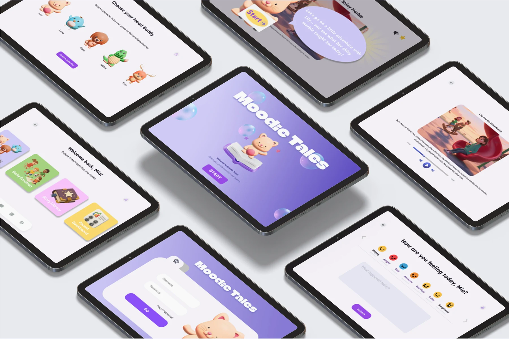
Designed for little feelingsand meaningful connections.
02 The problem
Big feelings.
Still finding
the words.
Children experience a rich emotional world long before they can easily explain it.
Spending time with young children, I noticed how tantrums, silence, and sudden mood shifts can hold feelings they are still learning to navigate. Parents care deeply, but often lack simple tools to support that learning.
Bedtime offered an opportunity: a familiar moment of connection where feelings could become stories, rather than another lesson.
agree daily emotion tracking helps children understand and express feelings.
are interested in bedtime stories generated from emotional keywords.
Parent survey · 15 parents with children aged 3–8 · Original project, p. 1. Descriptive findings from this small sample.
03 Research
Two users.
One shared ritual.
Understanding a child’s need for expression—and a parent’s need for simplicity.
A foundation in social-emotional learning.
The literature reviewed in the project positioned ages 3–8 as a formative period for SEL. Bedtime routines and guided storytelling offered natural ways to practice emotional literacy.
Original review: O’Conner et al. (2017); Durlak et al. (2011).
Interest in a story-led approach.
The 15-parent survey suggested interest in combining daily emotion tracking with personalized bedtime stories. These findings helped shape the emotion-to-story concept.
The original survey percentages are preserved above.
03 / PersonasA playful experience for children.
A playful experience for children.
A lighter lift for parents.
Zoe · Working parent, 32
Values her five-year-old daughter’s emotional growth, but struggles to find time for structured emotional education.
Design implication → Keep daily participation simple.Mia · Curious explorer, 5
Expressive and imaginative, with difficulty managing frustration and sadness.
Design implication → Make abstract feelings tangible and playful.Research personas · Original project, p. 2
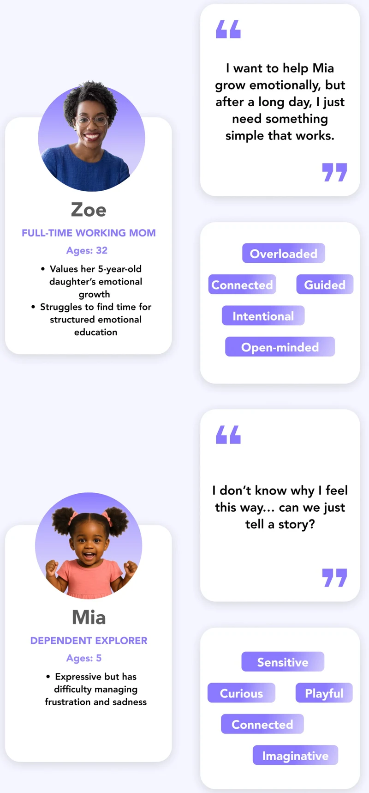
04 / Journey mapFrom first check-in
From first check-in
to shared reflection.
The map follows onboarding, daily use, story generation, and parent insights. It surfaced friction around setup, typing, generic stories, and overwhelming data.
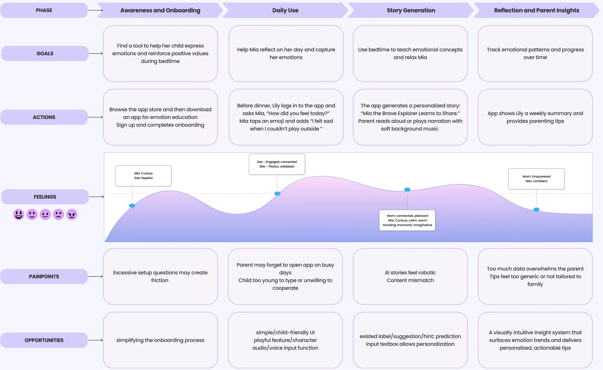
05 / Competitive analysisStories were available.
Stories were available.
Emotional continuity was the opportunity.
The project compared Story Spark, Moshi Kids, and StoryTime AI. Its analysis identified gaps around daily emotional experiences, reflection, and progress tracking.
The direction: connect how a child feels today with a story tonight, then help parents see patterns over time.
Competitive review conducted during the project · p. 3
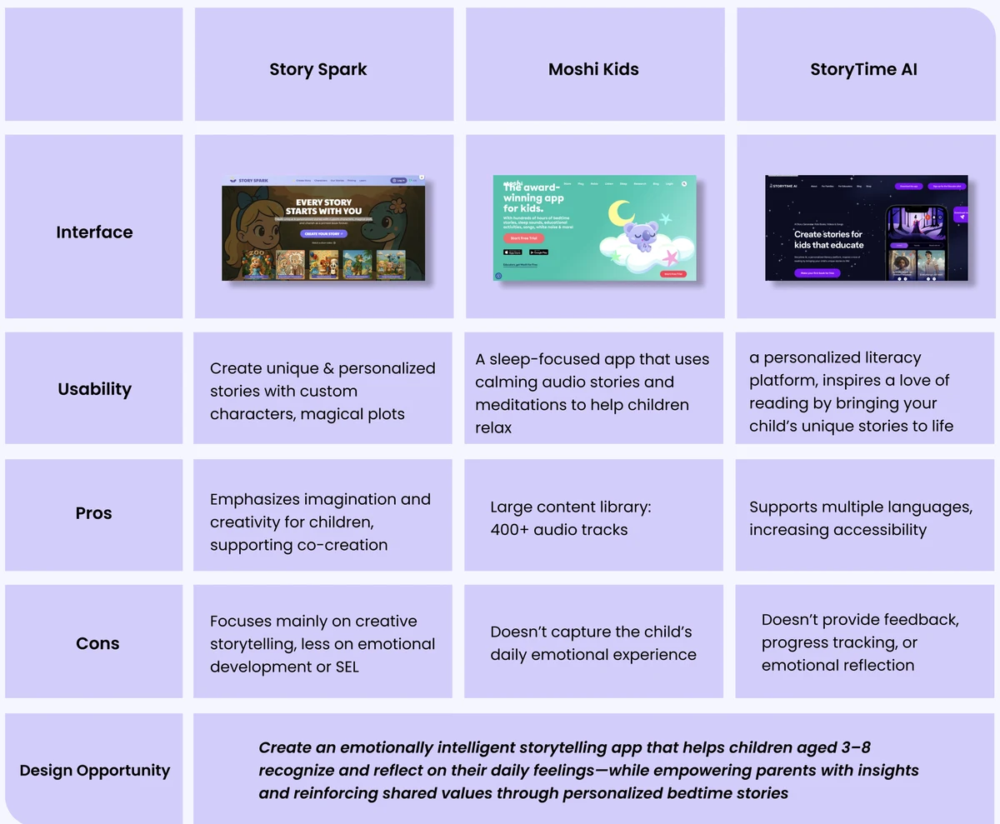
04 Key insights & design opportunities
Research becomes
design direction.
A clear line from what I learned to what the product should make possible.
Research findingUser needDesign opportunity
01
Strong feelings can be difficult for young children to articulate.
A simple, age-appropriate way to name a feeling.
Emotion Check-in
Emoji choices and a short note make daily expression approachable.
02
Surveyed parents showed interest in stories based on emotional keywords.
A story that relates to the child’s own experience.
Personalized Storytelling
Use the day’s emotions to shape an illustrated bedtime narrative.
03
The journey map identified a need to revisit experiences and reflect.
A recognizable connection between a story and a day.
Story Progress
Organize past stories along a visual journey that families can return to.
04
Parents need support without additional cognitive load.
Clear emotional patterns and practical guidance.
Parent Dashboard
Separate mood history, trends, and parenting tips into a readable hierarchy.
05 Design goals & product
A small ritual.
A growing connection.
Recognize a feeling. Turn it into a story. Make room to reflect.
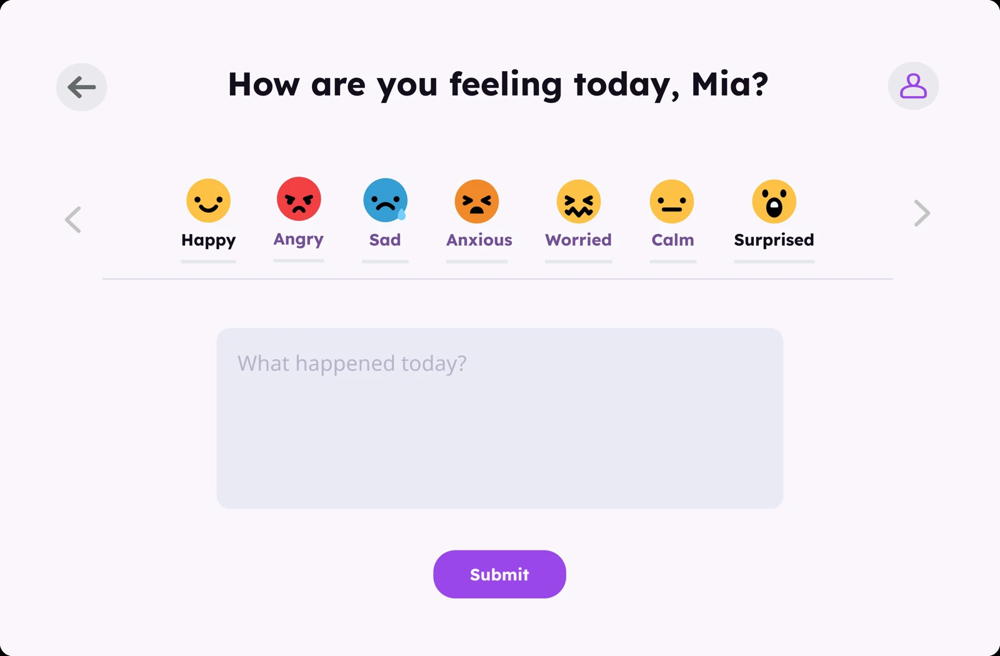
01 / The product
Emotion Check-in
Simple emoji choices and short notes help children record how they feel, without needing a long explanation.
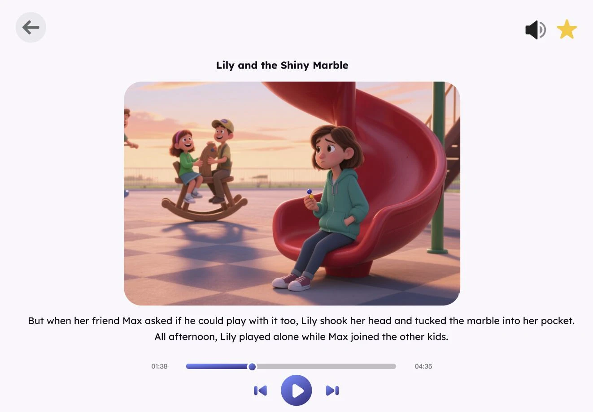
02 / The product
Personalized Storytelling
Daily moods become illustrated narratives with narration, offering a space to explore feelings through a character’s experience.
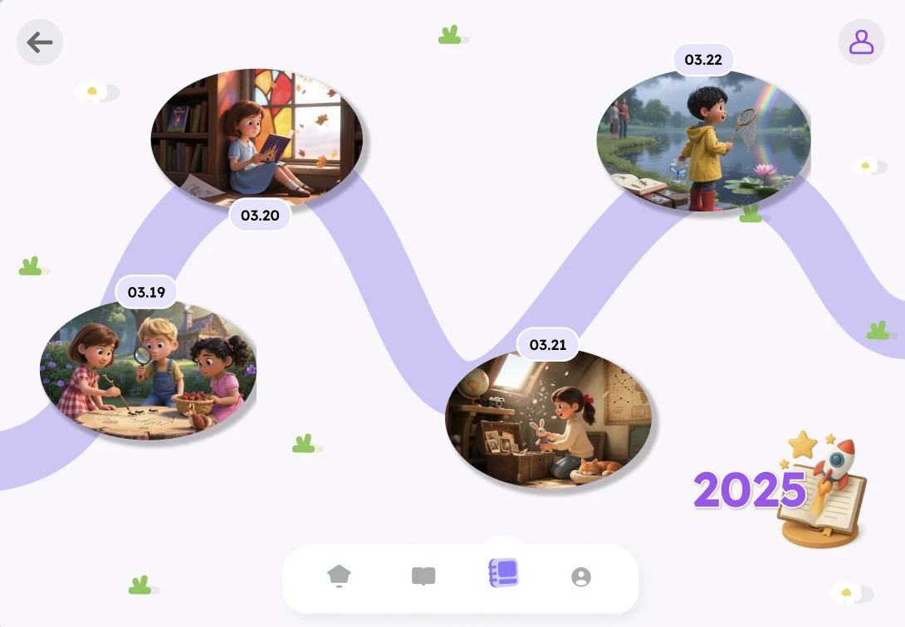
03 / The product
Story Progress
A journey-style library brings past stories together so families can revisit experiences and reflect on emotional growth.
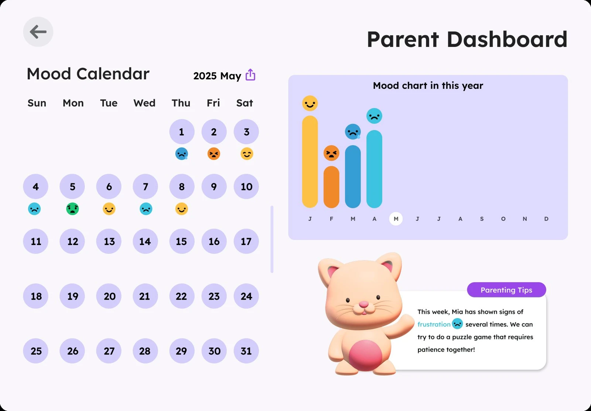
04 / The product
Parent Dashboard
Mood history, emotional trends, and parenting tips turn daily interactions into a clearer picture for caregivers.
06 Design process
From a pencil line
to a bedtime world.
I explored the core flows before building a visual language that could feel welcoming to children and clear to caregivers.
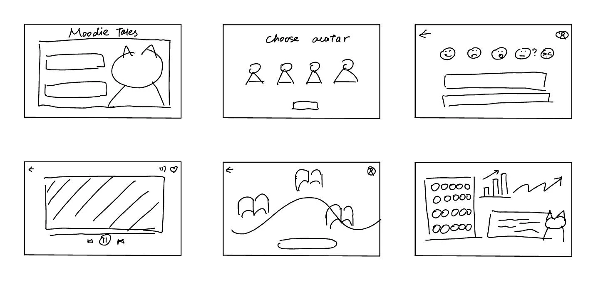
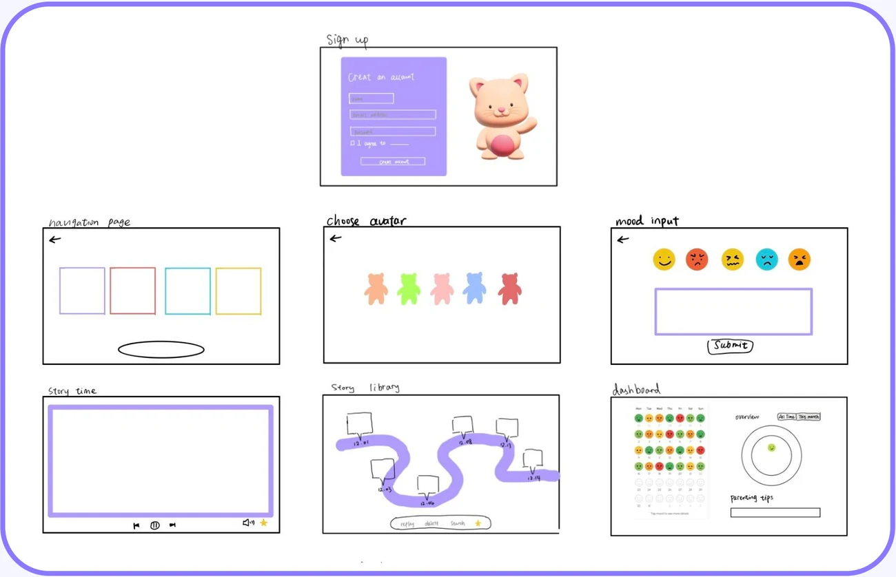
03 / Early UIMaking the whole
Making the whole
experience connect.
The first high-fidelity flow connected account setup, mood-buddy selection, emotion input, story generation, the library, and parent insights.
Child-friendly visuals created continuity, while a shared navigation structure helped parents and children move between activities.
See the final visual system ↓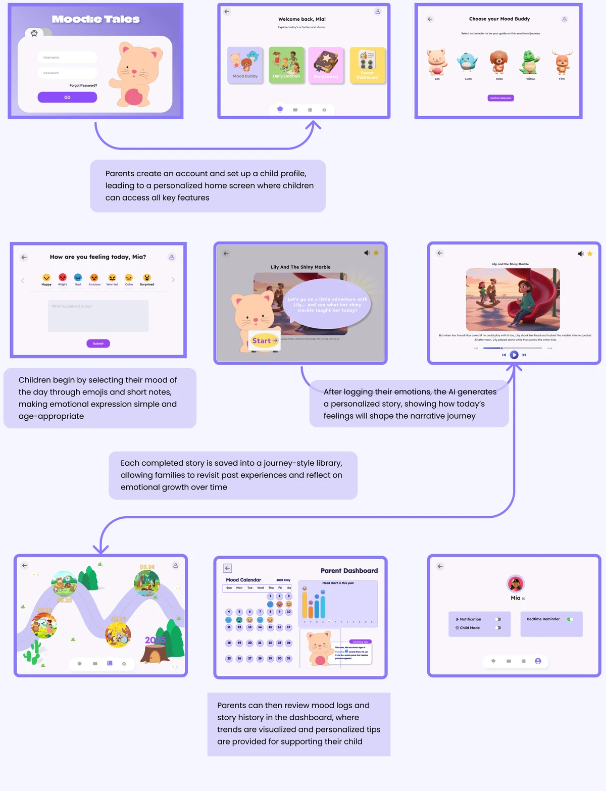
07 Usability testing & iteration
Playful is good.
Recognizable is better.
Testing with parents and children focused on navigation, clarity, and engagement.
Qualitative feedback informed two focused revisions: a more recognizable story map and a clearer parent dashboard.
A friendly foundation.
- The mood calendar was cute and easy to read.
- Illustrations and narration supported an engaging story flow.
- Parents appreciated clear onboarding and navigation.
- Children enjoyed choosing emotions and interacting with Mood Buddy.
Clarity beyond the first tap.
- Generic timeline drawings felt disconnected from real stories.
- The dashboard felt overloaded; trends were hard to spot.
- Parents wanted a practical way to share data.
- Younger children sometimes did not know what followed mood selection.
Iteration 01 / Story Progress MapWhich story did
Which story did
we read that day?
Finding: Generic drawings made the timeline feel disconnected from the stories children had read.
Change: Replace checkpoint artwork with the first illustration from each corresponding story. Simplify the path and lighten background bubbles.
Design intent: Make past stories recognizable while reducing visual clutter.
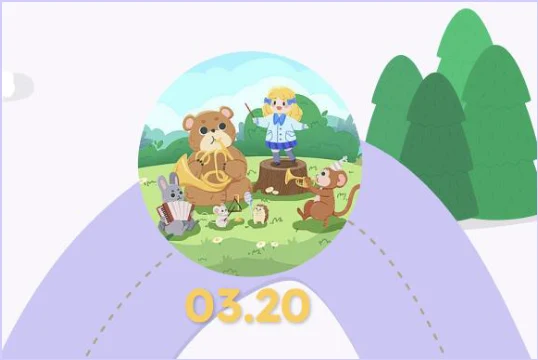
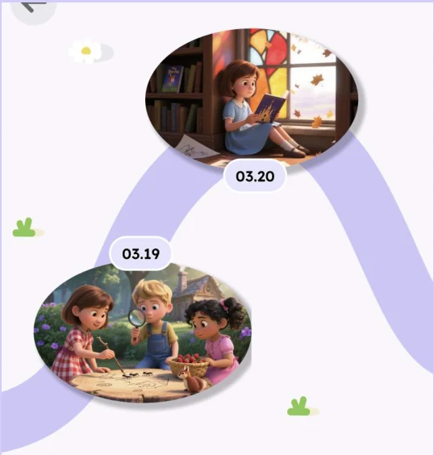
Iteration 02 / Parent DashboardLess searching.
Less searching.
More understanding.
Finding: Too much data made emotional trends hard to interpret quickly.
Change: Increase spacing and hierarchy; separate the mood calendar, chart, and parenting tips. Emphasize the chart and anchor the tip card at the bottom right.
Design intent: Lower cognitive load and make key insights easier to find.
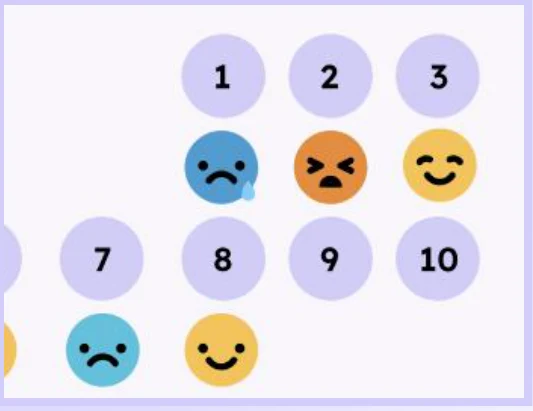
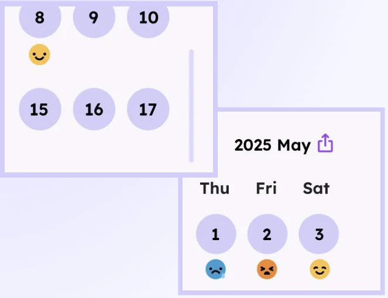
Original before/after detail views · p. 5
Also surfaced in testing
Parents asked for a monthly PDF summary to save or share with a teacher. Exportable reports and clearer post-check-in guidance remain follow-up opportunities.
08 Final design
A world that feels
safe to explore.
Lavender landscapes, rounded controls, and familiar mood buddies bring warmth to emotional learning.
A familiar face
for every feeling.
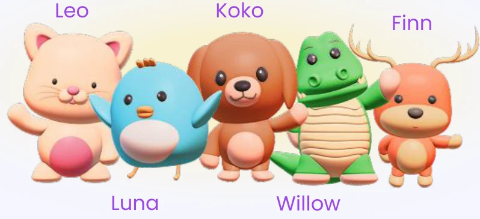
The original character family adds warmth, playfulness, and continuity across the experience.
Soft colors.
Clear choices.
The original UI pairs Climate Crisis display headings with Lexend text, rounded purple actions, and a soft neutral canvas.
Case-study typography uses Inter for an editorial presentation; product screenshots retain the original type.
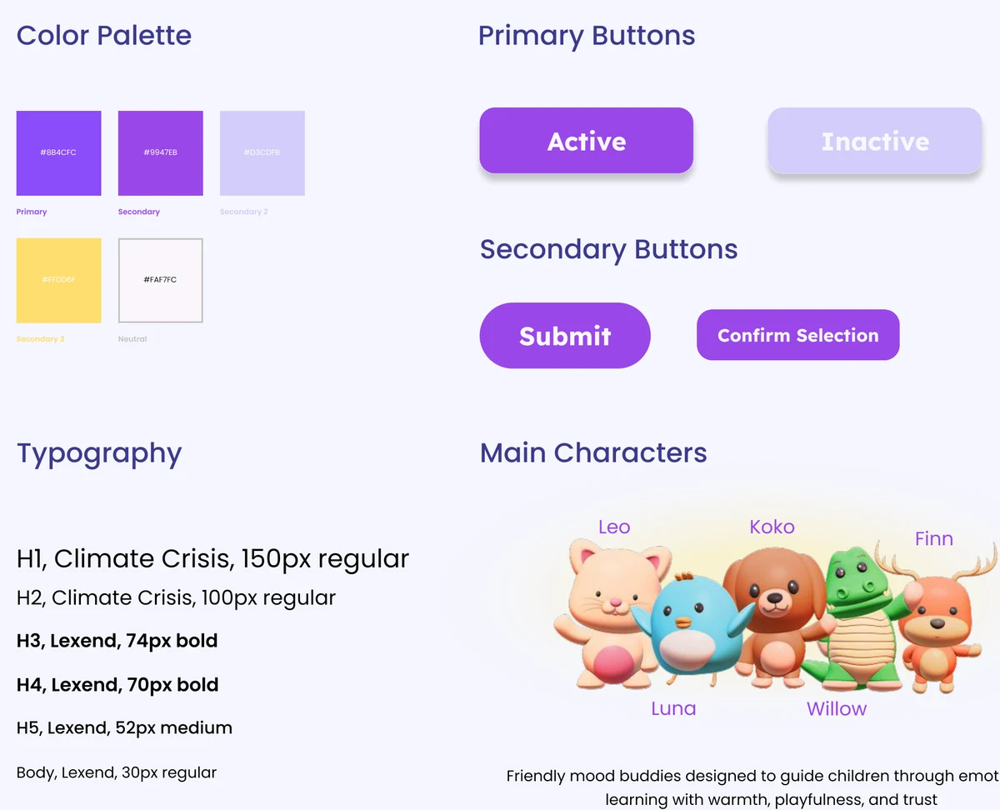
09 Reflection
Design for the child.
Make room for
the parent.
The central lesson was balancing playful engagement with simplicity and clarity.
Designing Moodie Tales showed me that meaningful emotional insights must also be easy to understand. That tension shaped the revisions to visual hierarchy and interaction design.
The story map needed to connect to a child’s real experience. The dashboard needed to support a parent’s attention, rather than ask for more of it.
Where I’d take it next
Next steps informed by the original reflection and usability feedback.